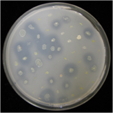
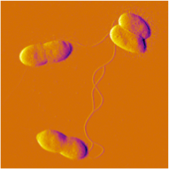
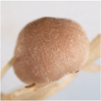
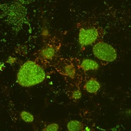

research
Burkholderia functional genomics


The symbiosis that occurs between legumes and bacteria of the Rhizobiaceae is one of the best-studied interactions between plants and microbes. Under conditions of nitrogen deficiency, an intricate molecular signaling cascade begins, whereby the bacteria are attracted to the roots of specific host plants and trigger the production of a novel plant organ, the nodule, in which the bacteria are housed and fix atmospheric nitrogen in exchange for carbohydrates. Until relatively recently, it was thought that only members of the alpha-proteobacteria nodulated plants. However, it is now clear that there is an extraordinary diversity in rhizobial species that associate with legumes. Members of the beta-proteobacteria, including at least four different Burkholderia species, such as B. tuberum, nodulate legumes. Furthermore, many species of Burkholderia have been found to be plant-associated endophytic bacteria, including B. unamae.
We have been using forward and reverse genetics approaches to generate mutants in B. unamae and B. tuberum in order to better understand the mechanisms in these bacteria that are important for their association with plants. We have been generating transposon insertion mutants, screening for defects in processes such as motility and exopolysaccharide production that are known in other bacteria to be important for plant-microbe interactions. In the case of B. tuberum, we are also screening for mutants defective in their ability to nodulate legumes. A number of mutants in each of these processes have been identified, the mutated genes identified using molecular methods, and further characterization being done, investigating attachment, biofilm formation, and plant growth promotion. We are also using directed mutagenesis to generate in-frame deletions of genes we hypothesize are critical for the interaction with plants.
Analysis of microbial diversity and interactions with legumes
We are using culture based and molecular methods to characterize the microbial community associated with legumes such as Lupinus chamissonis (Dune Lupine). L. chamissonis is a California native prominent in the nearby Ballona wetlands and El Segundo sand dunes that has thrived despite the heavy impacts of urbanization on these locations. In the case of dune lupine, we have been using molecular methods such as ARISA (Automated Ribosomal Intergenic Spacer Analysis) to assess how impacts, such as heavy metals, influence microbial composition. Analysis of cultured isolates from roots and nodules is also being done to determine how these organisms interact to promote plant growth and tolerance to the environment.
Identification and characterization of plant growth promoting rhizobacteria
Plant Growth Promoting Rhizobacteria (PGPR) are bacteria that reside in the rhizosphere (region associated with the surface of the root) of plants and have a beneficial effect on plant growth. The bacteria do this either by directly promoting plant growth by making nutrients available, producing phytohormones, etc., or indirectly by controlling plant pathogens. There has been much interest in the use of PGPRs as a biofertilizer, as it would reduce the use of chemical fertilizers and promote more sustainable agricultural practices. Students in the spring semester of the Introductory Biology Laboratory (BIOL112) have been involved in identification and characterization of bacteria in the rhizosphere of plants, looking for PGPRs, with additional analysis continuing in my research laboratory.

